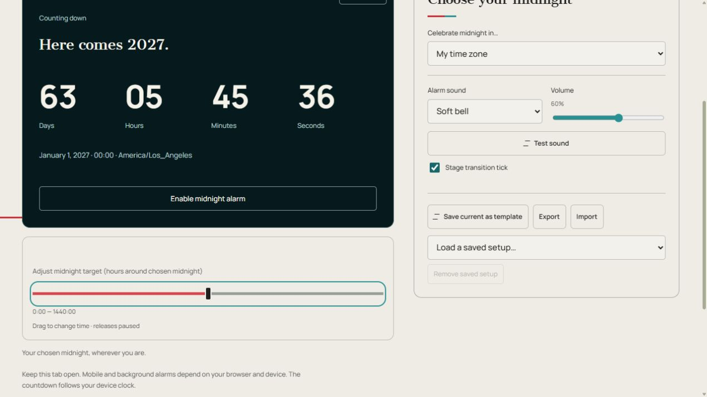

Compte à rebours du Nouvel An
Compte à rebours du Nouvel An jusqu'au 1er janvier à minuit dans le fuseau horaire de votre choix, avec alarme et affichage plein écran en option.
Nouvel An
Votre minuit choisi, où que vous soyez.
Gardez cet onglet ouvert. Les alarmes mobiles et en arrière-plan dépendent de votre navigateur et de votre appareil. Le compte à rebours suit l'horloge de votre appareil.
Fonctionnement et conseils
Fonctionnement : Compte à rebours du Nouvel An
Le compte à rebours du Nouvel An affiche les jours, les heures, les minutes et les secondes jusqu'au 1er janvier à minuit dans le fuseau horaire sélectionné. Il commence par le fuseau horaire de votre navigateur et propose également UTC, New York, Los Angeles, Londres, Paris, Dubaï, Tokyo et Sydney.
Choisissez le lieu dont vous souhaitez suivre la célébration et lisez la date cible et le fuseau horaire sous le compte à rebours. L’objectif est minuit local dans cette zone, et non minuit dans l’emplacement de chaque téléspectateur. Un changement de zone peut donc modifier à la fois le temps restant et l'année suivante.
Le compte à rebours suit l'horloge de votre appareil. Activer l'alarme de minuit déverrouille le son pour l'onglet ouvert ; choisissez d'abord un son et un volume audibles. À la cible, la page affiche un message de vœux du Nouvel An. Vous pouvez alors choisir de compter à rebours jusqu’à l’année suivante.
Configurer et exécuter la minuterie
- Choisissez Célébrer minuit dans… et vérifiez l'année et la zone cibles. Le compte à rebours s'exécute immédiatement à partir de l'horloge de l'appareil.
- Choisissez l'alarme et le volume, tester le son et activer l'alarme de minuit pour cet onglet ouvert.
- Plein écran agrandit l’affichage. Le calendrier d’ajustement des objectifs décale la date limite vers minuit ; déplacez-le uniquement lorsque vous avez l'intention de changer de cible.
Aperçu des commandes

- Activer l'alarme de minuit — Déverrouillez l'alarme pour cet onglet ouvert.
- Tester le son — Vérifiez le son sélectionné et le volume de l'appareil.
- Célébrez minuit à…
- Choisit le fuseau horaire cible.
- Activer l'alarme de minuit
- Active et déverrouille le son sélectionné pour cet onglet.
- Compte à rebours jusqu'à l'année prochaine
- Apparaît après la cible et choisit la nouvelle année suivante.
- Calendrier d'ajustement de l'objectif
- Modifie la date limite autour de minuit choisi.
- Plein écran
- Agrandit l'horloge sombre. Partez avec le contrôle de sortie ou Escape lorsque cela est pris en charge. La prise en charge du téléphone et du navigateur varie.
Paramètres et configurations enregistrées
- Son d'alarme/Volume/Son de test
- Choisissez gong, cloche, bip ou Off, réglez le volume et testez sans démarrer l'horloge.
- Enregistrer le modèle actuel / Charger une configuration enregistrée…
- Entrez un nom et choisissez Enregistrer la configuration ; Annuler ferme la boîte de dialogue de dénomination. Choisissez un nom enregistré pour charger cette configuration. La réutilisation d'un nom remplace ce modèle. Les modèles stockent les paramètres, pas les rapports de synchronisation.
- Supprimer la configuration enregistrée
- Supprime la configuration nommée sélectionnée, pas la page du minuteur.
- Exporter/Importer
- L'exportation télécharge une configuration JSON ; L'importation charge une configuration exportée à partir du même type de minuterie. Exporter CSV, le cas échéant, télécharge les résultats à la place.
- Étoile soulignée / Démarrer la minuterie
- La star ajoute cette page à la ligne des favoris de la page principale et des autres minuteurs. Appuyez à nouveau dessus pour le supprimer. Make start timer choisit la minuterie qui s'ouvre à partir de la page d'accueil.
- Connectez-vous avec Google/Déconnexion/Mes minuteurs/Charger les paramètres synchronisés
- Le contrôle de compte se connecte ou se déconnecte. Mes minuteries répertorient les minuteries personnalisées enregistrées. Charger les paramètres synchronisés charge les modifications de compte reçues ; mettez d'abord en pause une minuterie en cours d'exécution.
- Clic de transition entre étapes
- Active ou désactive le clic de transfert court séparément des alarmes de scène.
Exemple : suivre minuit dans une autre ville
Choisissez Tokyo sous Célébrer minuit dans… et vérifiez l'année cible et la zone sous l'horloge. Activer l'alarme de minuit et tester le son pour un signal sonore ; Plein écran agrandit l’affichage.
Autres façons de l'utiliser
- Un affichage de fête dans votre zone locale
- Suivre des amis dans un autre fuseau horaire
Conseils pratiques
- Confirmez la ville ou la zone affichée avant de partager un écran avec des personnes situées à d'autres endroits.
- Vérifiez que l'horloge de l'appareil est correcte avant d'utiliser le compte à rebours pour une fête de groupe.
- Activer et tester l'alarme à l'avance ; l'onglet doit rester ouvert.
- Utilisez le plein écran pour l'affichage d'une pièce et gardez l'appareil connecté à l'alimentation pendant un long événement.
- Pour un court toast ou un compte à rebours d'activité, utilisez une minuterie au lieu de modifier l'objectif du Nouvel An.
Limites de sauvegarde, de son et de navigateur
Les paramètres, les modèles nommés, les minuteries personnalisées et les favoris sont enregistrés dans ce navigateur. Connectez-vous avec Google en haut à droite pour synchroniser les configurations enregistrées. Si Charger les paramètres synchronisés apparaît, faites une pause avant de charger. La synchronisation de la configuration enregistrée ne synchronise pas les horloges en direct sur tous les appareils.
Le compte à rebours suit la date, le fuseau horaire et l'horloge de l'appareil sélectionnés à chaque visite. Gardez l'onglet ouvert et testez le son de minuit.